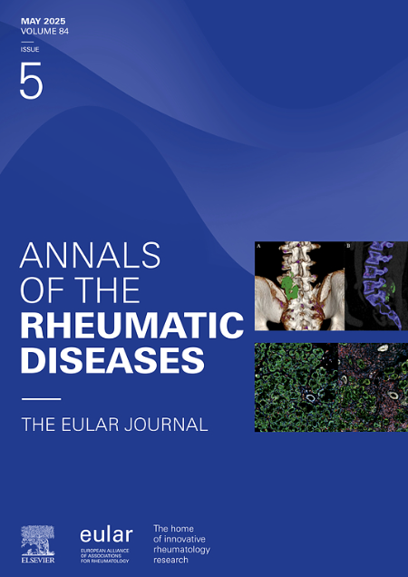
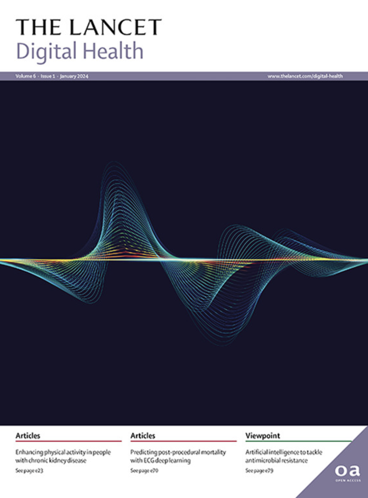

Publications
Our contributions to the scientific community
Featured Publications
Key Publication
Nature Communications - May 2025
Key Publication

Annals of Rheumatic Diseases - Feb 2025
Key Publication

Lancet Digital Health - Dec 2023
2025
Deep Learning-Based Multimodal Clustering Model for Endotyping and Post-Arthroplasty Response Classification
A Multi-Class Neural Network Machine Learning Algorithm to Diagnose Graft Pathology
Ramucirumab and Paclitaxel in Second-Line Therapy for HER2-Positive Gastroesophageal Cancer
Mediation CNN (Med-CNN) Model for High-Dimensional Mediation Data
2024
460P: Real-World Study of Ramucirumab and Paclitaxel as ≥2nd-Line Therapy
2023
ReGeNNe: Regularized Genetic Pathway-based Deep Learning Method for Disease Prediction
A Deep Learning Framework for Personalized Dynamic Diagnosis of Graft Fibrosis
2022
The Promise of Machine Learning Applications in Solid Organ Transplantation
Identifying Clinical Subtypes in Sepsis-Survivors with Different One-Year Outcomes
2021
2020
Older Publications
A Novel Feature Transform Framework Using Deep Neural Network for Multimodal Floor Plan Retrieval
IJDAR, July 2019
High-Level Feature Aggregation for Fine-Grained Architectural Floor Plan Retrieval
IET Computer Vision, March 2018
REXplore: A Sketch-Based Interactive Explorer for Real Estates Using Floor Plan Images
IEEE ISM, December 2018
Attributed Paths for Layout-Based Document Retrieval
Communications in Computer and Information Science (DAR), 2018
DANIEL: A Deep Architecture for Automatic Analysis and Retrieval of Building Floor Plans
ICDAR, November 2017
A Unified Framework for Semantic Matching of Architectural Floorplans
ICPR, December 2016